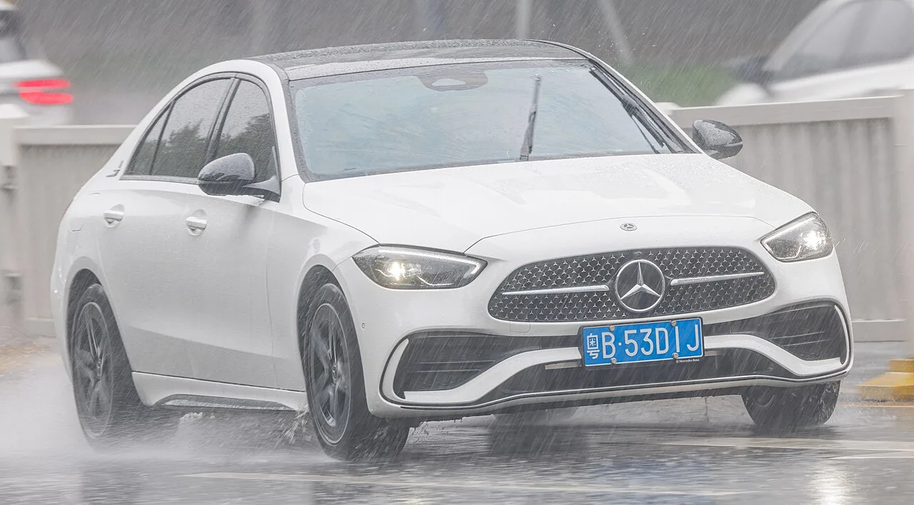
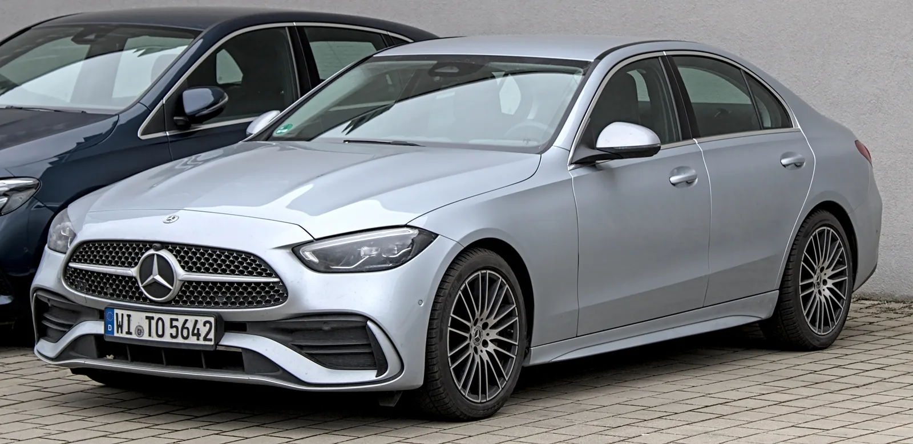

▲ 메르세데스-벤츠 C클래스. 이번 부분변경은 전기차가 아닌 내연기관 사양이다
벤츠가 내연기관 C클래스의 부분변경을 공개했습니다. 최근 나온 전기 C클래스와는 다른 차입니다.
부분변경이라고 하면 보통 그릴과 범퍼, 램프 정도를 손봅니다. 그런데 이번엔 범위가 넓습니다.
S클래스에 있던 기술이 내려왔고, 서스펜션과 흡기 계통까지 다시 손봤습니다.
1. 255마력, 그리고 20초짜리 27마력
미국 사양의 엔진 구성은 단순합니다. 2.0리터 터보 4기통에 48V 마일드 하이브리드 하나뿐입니다.
출력은 255마력, 295lb-ft입니다. 여기서 눈여겨볼 것은 힘을 만드는 방식입니다.
ISG(통합 시동 발전기)가 최대 23마력, 151lb-ft를 보탭니다. 여기에 오버부스트가 붙어 약 20초 동안 27마력이 추가됩니다.
20초라는 제한이 붙는 이유는 48V 배터리 용량 때문입니다. 짧은 시간에 큰 전력을 뽑아 쓰는 구조라, 추월 가속이나 고속도로 합류처럼 순간적으로 힘이 필요한 상황에 맞춰져 있습니다.
전동식 보조 컴프레서도 새로 들어갑니다. 터보가 아직 압력을 만들지 못하는 저회전 구간에서 전기 모터가 공기를 밀어 넣어 응답을 채워주는 장치입니다. 4기통 다운사이징 엔진의 고질적 약점을 겨냥한 부품입니다.
2. S클래스에서 내려온 것
이번 부분변경의 상징적인 항목은 증강현실 헤드업 디스플레이입니다. 옵션으로 제공됩니다.
일반 헤드업 디스플레이는 속도와 내비 방향을 유리에 띄우는 수준입니다. AR 방식은 다릅니다. 실제 도로 위에 화살표가 겹쳐 보이도록 표시해, 어느 갈림길로 들어가야 하는지가 직관적으로 읽힙니다.
이 기술은 원래 S클래스급에만 들어가던 사양입니다. 부분변경 단계에서 한 체급 아래로 내려온 셈입니다.
실내 화면 구성도 바뀝니다. 12.3인치 디지털 계기판과 11.9인치 세로형 중앙 디스플레이이고, 구글 내비게이션이 통합됩니다.
다만 벤츠는 최근 스크린 일변도에서 물리 버튼으로 되돌아가는 흐름도 함께 보이고 있습니다. 켈레니우스 CEO가 직접 그 문제를 인정한 바 있습니다.

▲ S클래스에 있던 증강현실 헤드업 디스플레이가 한 체급 아래로 내려왔다
3. 유럽에만 들어가는 후륜 조향
지역별로 갈리는 사양이 하나 있습니다. 후륜 조향입니다. 유럽 사양에만 옵션으로 제공되고, 각도는 최대 2.5도입니다.
후륜 조향은 두 방향으로 작동합니다. 저속에서는 뒷바퀴가 앞바퀴 반대로 꺾여 회전 반경을 줄이고, 고속에서는 같은 방향으로 꺾여 차로 변경 안정성을 높입니다.
2.5도는 큰 각도가 아닙니다. 대형 세단이 10도까지 꺾는 것과 비교하면 작습니다. 다만 C클래스 체급에서는 좁은 골목과 주차장에서 체감이 납니다.
미국 사양에서 빠진 이유는 명시되지 않았습니다. 통상 이런 차이는 수요 예측과 원가에서 갈립니다. 유럽은 도로가 좁아 회전 반경 개선의 가치가 크고, 미국은 그렇지 않습니다.
4. 서스펜션을 다시 손봤다는 의미
부분변경에서 서스펜션 재세팅이 들어가는 것은 흔한 일이 아닙니다. 보통은 외관과 인포테인먼트에서 끝냅니다.
벤츠가 여기까지 손댄 배경에는 현행 C클래스에 대한 평가가 있습니다. 승차감과 핸들링의 균형에서 이전 세대만 못하다는 지적이 이어져 왔습니다.
이번 변경이 그 지적에 대한 응답인지는 실차를 타봐야 알 수 있습니다. 다만 제조사가 비용을 들여 다시 잡았다는 사실 자체가 문제를 인지했다는 신호로 읽힙니다.
또 하나 눈여겨볼 대목은 이 차가 여전히 내연기관이라는 점입니다. 벤츠는 전기 C클래스를 별도로 내놓으면서 가솔린 C클래스에도 상당한 개발비를 투입했습니다. 양쪽을 병행하는 전략입니다.

▲ 부분변경에서 서스펜션까지 다시 잡은 것은 흔한 일이 아니다
5. 국내 도입은 어떻게 될까
미국 딜러 도착이 2027년 상반기이니, 국내는 그보다 늦을 가능성이 큽니다.
주목할 것은 엔진 구성입니다. 미국은 2.0 4기통 단일 사양으로 정리됐습니다. 국내 도입 시에도 비슷한 단순화가 적용될지가 관건입니다.
가격은 아직 공개되지 않았습니다. AR 헤드업 디스플레이나 후륜 조향 같은 항목이 단품 옵션인지 패키지로 묶이는지에 따라 실구매가가 크게 달라집니다.

▲ 국내 도입 시 옵션 구성에 따라 실구매가가 크게 달라진다
참고로 벤츠는 최근 국내에서 할인 대신 보증을 늘리는 방향으로 프로모션을 운영하고 있습니다.
6. 정리
신형 C클래스는 내연기관 사양의 부분변경입니다. 미국 기준 2.0리터 터보 4기통 48V 마일드 하이브리드 255마력 단일 구성이고, 오버부스트로 20초간 27마력이 더해집니다.
핵심은 S클래스의 증강현실 헤드업 디스플레이가 내려왔다는 것, 그리고 서스펜션과 흡기 계통까지 다시 손봤다는 것입니다. 외관만 바꾸는 통상적인 부분변경보다 범위가 넓습니다.
후륜 조향(최대 2.5도)은 유럽 사양 옵션이고 미국에는 들어가지 않습니다. 미국 딜러 도착은 2027년 상반기, 가격은 미공개입니다.